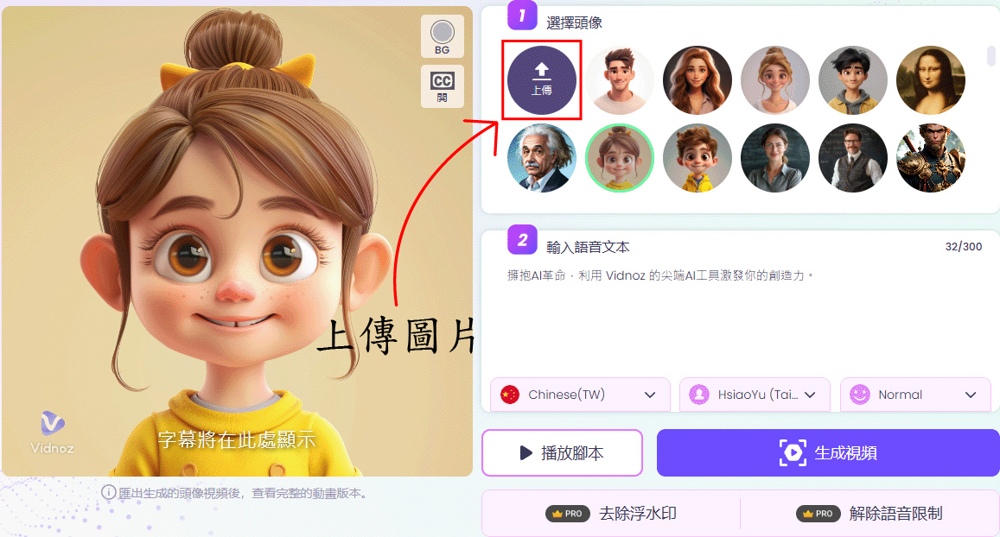
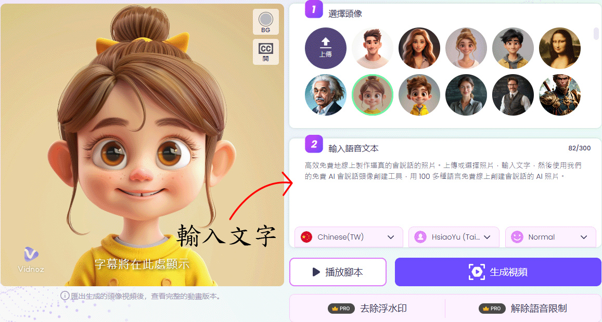
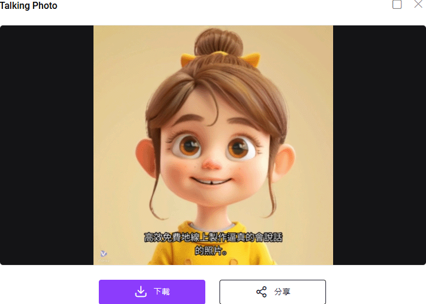

這是一款能夠將靜態照片轉換為會說話影片的 AI 工具。
主要功能是透過 AI 技術生成嘴巴和臉部的動作，使照片中的人物看起來像是在說話。
以下是 Vidnoz AI 生成會說話照片的基本流程：
前往 VIDNOZ 官方網站，上傳人像照片。
輸入文字讓 AI 轉換為語音，或上傳自己的語音。
AI 會分析照片，自動生成嘴部、臉部動作，使其與語音同步。
影片生成後，可下載 MP4，或直接分享到社交平台。
Vidnoz AI 可應用於虛擬主播、教育、行銷、娛樂等場景。
本工具提供免費使用，但部分進階功能（如去除浮水印）需💰付費解鎖，以獲得更完整的體驗。